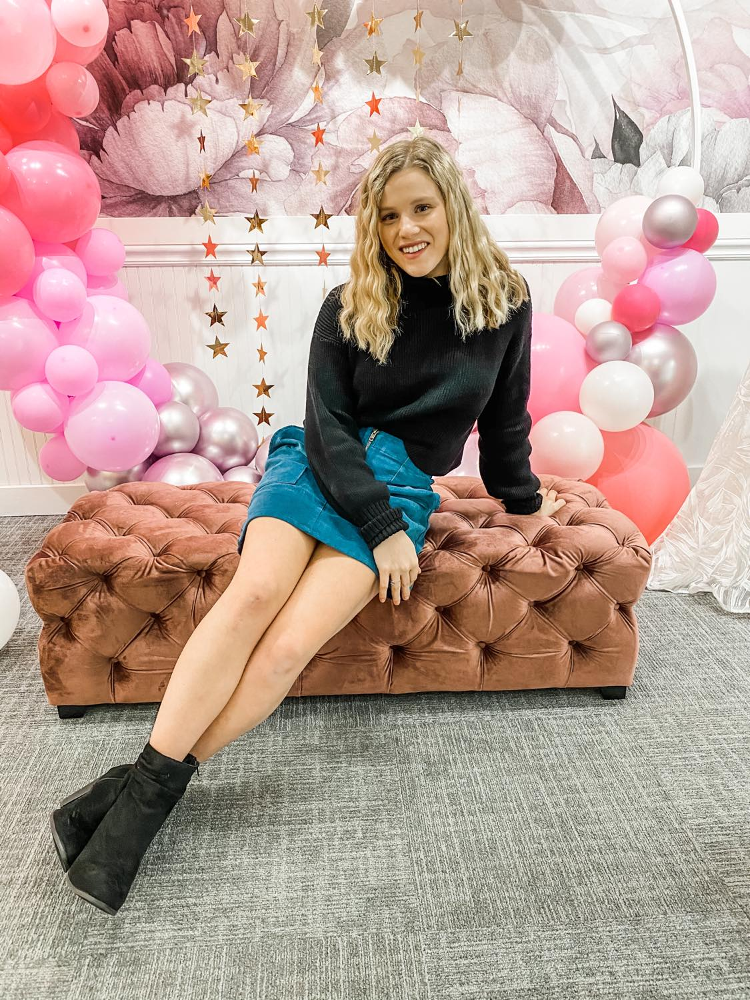

Work Experience

I have held many jobs that I have enjoyed, and have helped me learn and grow. Below you will find all of my work experience.
Julie's Bridal Gallery
- Years worked: 6 years- 2017- present
- Job title: Social Media Manager
- Responsibilities:
- Assist brides in helping them try on and find their wedding dress.
- Take photos of all of the inventory.
- Run all social media pages.
- Create and run events. Set up promotions.
- Create and run the business blog.
Hutch and Hide
- Years Worked: 1 year- 2021- present
- Job title: Sales Associate
- Responsibilities:
- Inspect, check in, and tag inventory.
- Organize supplies and assist customers.
- Take pictures of merchandise for store's social media.
University of Wisconsin's Women's Soccer Manager
- Years Worked: 1 year- 2019-2020
- Job title: Equipment Manager
- Responsibilities:
- Assist coaches and players with anything they may need during practices and games.
- Attend to the equipment and attend all home games.
- Meet food delivery person after the home games.